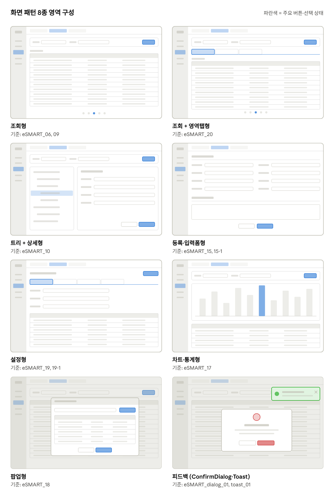
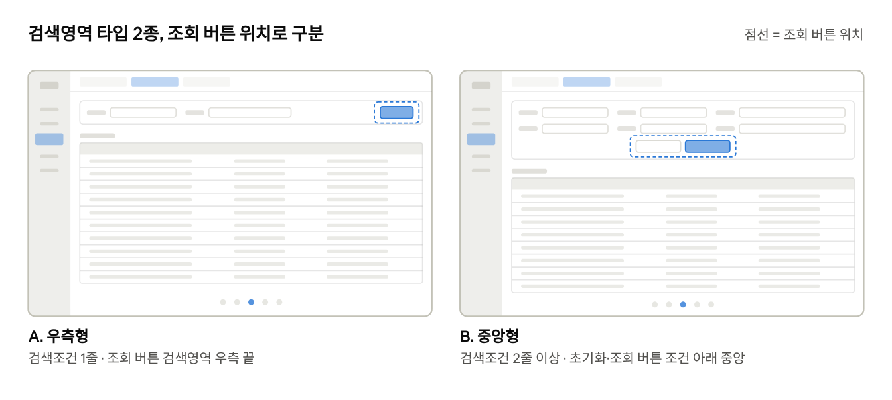
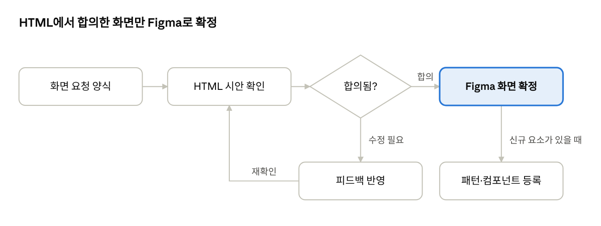

eSMART 화면 요청 양식 · 컴포넌트 사용 가이드
2026-10-13 · 송이
1. 문서 목적
스토리보드 없이 요건정리 문서에서 바로 화면 작업을 요청하기 위한 기준. 기획자는 화면 패턴 선택 + 요청 양식 작성만으로 화면 요청 가능.
- 요건정리 문서 작성 (메뉴·기능 단위)
- 화면별로 화면 패턴 선택 (3장)
- 화면 요청 양식 작성 (5장, 예시는 6장)
- HTML 시안으로 빠르게 확인·수정 → 합의
- Figma 화면으로 확정 (eSMART_XX)
컴포넌트 선택이 애매할 때는 4장 사용 가이드 참고. 공통 영역(LNB, Page Tab 등)은 2장 기준으로 자동 적용되므로 요청서에 적지 않음.
2. 화면 공통 기준
모든 화면에 고정 적용되는 조건. 화면 요청 시 따로 적지 않아도 됨.
| 항목 | 기준 |
|---|---|
| 화면 스타일 | eSMART_01~08 기준 (1920 해상도, 브라우저 프레임 포함) |
| LNB | 기존 컴포넌트 그대로. 해당 메뉴만 활성 표시 |
| Page Tab | 기존 탭 유지, 활성 탭 라벨만 화면명으로 변경 |
| 컨텐츠 구성 | 검색영역(상단 고정) + 컨텐츠 영역(남은 높이 채움) |
| 그리드 | grid 컴포넌트 + 샘플 데이터, 화면 높이에 맞춰 채움 |
| 컴포넌트 | 기존 컴포넌트명·컬러 변수 유지 |
| 개발 기준 | PrimeReact v9. 신규 컴포넌트는 PrimeReact 구조 기준으로 추가 |
| 화면 ID | eSMART_XX, 파생안은 eSMART_XX-1 |
3. 화면 패턴 카탈로그
화면 요청 시 아래 패턴 중 하나 선택. 기준 화면은 Figma 「시안」 페이지의 해당 화면.

검색영역 타입. 검색영역이 있는 모든 패턴(조회형, 조회+영역탭형, 트리+상세형, 차트·통계형, 팝업형)에 A/B 중 하나 적용. 기본은 검색조건 줄 수 기준으로 자동 결정, 예외 화면만 요청 양식에 타입 명시.

| 패턴 | 구성 | 사용 상황 | 기준 화면 |
|---|---|---|---|
| 조회형 | 검색영역 + Total·목록 헤더 + 그리드 + 페이지네이션 | 목록 조회, 이력 확인 | eSMART_06, eSMART_09 |
| 조회 + 영역탭형 | 검색영역 + area-tab + 탭별 그리드 | 같은 조건, 다른 분류의 목록 | eSMART_20 |
| 트리 + 상세형 | 좌측 트리 + 우측 상세 폼 | 메뉴·코드·조직 등 계층 관리 | eSMART_10 |
| 등록·입력폼형 | 섹션별 입력 폼 + 하단/상단 버튼 | 신규 등록, 수정 | eSMART_15, eSMART_15-1 |
| 설정형 | 탭 + 설정 항목 폼·테이블 | 환경·조건 설정 | eSMART_19, eSMART_19-1 |
| 차트·통계형 | 검색영역 + 차트 + 요약 그리드 | 통계, 추이 분석 | eSMART_17 |
| 팝업형 | dim + dialog (header·본문·버튼) | 화면 이동 없이 선택·입력 | eSMART_18 |
| 피드백 | ConfirmDialog 5종, Toast 4종 | 확인·경고·완료 안내 | eSMART_dialog_01, eSMART_toast_01 |
패턴에 없는 화면은 「신규 패턴」으로 요청. 확정 후 카탈로그에 추가.
4. 컴포넌트 사용 가이드
기획 단계에서는 「무엇을 하려는지」만 정하면 되고, 컴포넌트는 아래 기준으로 자동 선택.
검색영역
| 상황 | 컴포넌트 | 비고 |
|---|---|---|
| 정해진 목록에서 1개 선택 | dropdown | 기본값 명시 (예: 전체) |
| 목록이 많고 검색 필요 | autocomplete | 거래처, 품목 등 |
| 자유 입력 | inputtext | placeholder 문구 명시 |
| 기간 프리셋 + 기간 | selectbutton + datepicker | 버튼 선택 시 날짜 연동, 기본 선택값 명시 |
| 복수 선택 (소수) | checkbox+label | 4개 이하 |
| 단일 선택 (소수) | radio+label | 4개 이하 |
| 조회·초기화 | button primary + 아이콘 버튼(refresh) | A 우측형: 조건 1줄, 검색영역 우측 끝 · B 중앙형: 조건 2줄 이상, 조건 아래 중앙 |
목록·그리드
- 컬럼 정의: 컬럼명, 정렬(좌/중/우), 형식(날짜·숫자·%), 소팅 여부
- 선택: 복수 처리(삭제·다운로드)가 있을 때만 체크박스 컬럼
- 헤더 2줄: 컬럼명이 길거나 그룹 헤더가 필요할 때 grid header=2row
- 목록 헤더: Total 건수 + 목록 내 검색(inputtext + 돋보기 버튼) + 엑셀 등 목록 단위 버튼
- 데이터 없음: 그리드 영역 안에 노데이터 문구 표시
- 페이지: paginator 기본. 건수가 적은 팝업 목록은 스크롤
탭
- area-tab: 한 화면 안에서 컨텐츠 분류 전환 (기획 대상)
- page-tab: 열린 메뉴 화면 전환 (공통 영역, 기획 대상 아님)
버튼
| variant | 용도 |
|---|---|
| primary | 화면의 핵심 동작 1개 (조회, 저장, 등록) |
| secondary / outline | 보조 동작 (취소, 목록, 추가) |
| neutral / subtle | 목록 내 보조 기능, 아이콘 버튼 |
| danger | 삭제 확정 등 되돌릴 수 없는 동작 (다이얼로그 내) |
| danger-outline | 화면 내 삭제 버튼 |
메시지 · 피드백
| 상황 | 컴포넌트 | type / severity |
|---|---|---|
| 삭제 등 되돌릴 수 없는 동작 확인 | ConfirmDialog | danger |
| 작성 중 이탈, 주의 필요 | ConfirmDialog | warning |
| 저장·등록 후 다음 행동 안내 | ConfirmDialog | success |
| 정보 안내·확인 | ConfirmDialog | info |
| 세션 만료 등 텍스트 안내 | ConfirmDialog | default (아이콘 없음) |
| 동작 결과 알림 (흐름 유지) | Toast | success / info / warn / error |
판단 기준: 사용자가 선택을 해야 하면 ConfirmDialog, 알기만 하면 되면 Toast.
5. 화면 요청 양식
화면 1개당 1장. 필수 항목만 채워도 작업 가능하고, 빈 항목은 패턴 기본값 적용.
| 항목 | 필수 | 작성 내용 |
|---|---|---|
| 화면 ID / 화면명 | ● | eSMART_XX / Page Tab에 표시되는 이름 |
| LNB 위치 | ● | 1depth > 2depth |
| 화면 패턴 | ● | 3장 패턴 중 선택, 또는 신규 패턴 |
| 화면 목적 | ● | 누가, 무엇을 확인·처리하는 화면인지 1줄 |
| 검색조건 | 항목명 / 입력 방식 / 기본값 / 필수 여부 + 검색영역 타입(A 우측형 / B 중앙형, 비우면 기준 적용) | |
| 탭 구성 | area-tab 항목과 기본 선택 탭 | |
| 목록 컬럼 | 컬럼명 / 정렬 / 형식 / 소팅 여부 | |
| 입력 항목 | 등록·설정 화면: 항목명 / 입력 방식 / 필수 / 기본값 | |
| 버튼·액션 | 버튼명과 눌렀을 때의 동작 | |
| 메시지·팝업 | 상황 / ConfirmDialog·Toast 종류 / 문구 | |
| 예외 처리 | 데이터 없음, 권한 없음, 필수값 누락 | |
| 참고 화면 | 기존 eSMART 화면, 설계서 캡쳐, 외부 레퍼런스 |
복사해서 쓰는 텍스트 양식:
화면 ID / 화면명 :
LNB 위치 :
화면 패턴 :
화면 목적 :
검색조건 :
검색영역 타입 : A 우측형 / B 중앙형
탭 구성 :
목록 컬럼 :
입력 항목 :
버튼·액션 :
메시지·팝업 :
예외 처리 :
참고 화면 :
6. 작성 예시 — eSMART_20 Alarm History Report
실제 작업한 화면 기준 예시. 이 정도 분량이면 바로 화면 작업 가능.
| 항목 | 내용 |
|---|---|
| 화면 ID / 화면명 | eSMART_20 / Alarm History Report |
| LNB 위치 | 감염관리 > (해당 메뉴) |
| 화면 패턴 | 조회 + 영역탭형 |
| 화면 목적 | 공장·제품별 이상 알람 발생 이력 조회 |
| 검색조건 | 조회 항목: dropdown 2개 (공장 / 제품) · 조회 기간: selectbutton(당일·1주일·1개월·3개월·6개월, 기본 당일) + datepicker, 버튼 선택 시 날짜 연동 |
| 탭 구성 | 생산계획 대비 실적 이상(기본) / 품질 이상 / 설비 이상 |
| 목록 컬럼 | 체크박스 · 공장(중) · 제품(중) · 발생시간(중, YYYY-MM-DD HH:mm) · 계획수량(개, 우) · 생산실적(개, 우) · 납기준수율(%, 우), 전체 소팅 |
| 버튼·액션 | 조회, 초기화(아이콘) · 목록 내 검색(공장·제품 검색 + 돋보기 버튼) |
| 예외 처리 | 조회 결과 없음 → 그리드 노데이터 문구 |
| 참고 화면 | eSMART_06 (조회형 기본 구성) |
7. 작업 진행 방식
HTML은 빠른 탐색·수정용, Figma는 확정 화면 기록용으로 역할 구분.

- HTML 시안: PrimeReact v9 구조 + eSMART 컴포넌트·토큰. 문구, 컬럼, 배치를 대화로 즉시 수정
- Figma 확정: 합의된 HTML 시안을 Figma 컴포넌트로 제작, 「시안」 페이지에 eSMART_XX로 배치
- 이름 1:1 일치: HTML 클래스·컴포넌트명은 Figma 컴포넌트명과 동일 (grid, selectbutton, area-tab, confirm-dialog, toast 등)
- 신규 요소: 패턴·컴포넌트가 새로 생기면 Components 페이지와 3·4장에 함께 반영
- 파생안: 기존 화면은 유지하고 eSMART_XX-1로 추가
- 피드백: 화면 단위로 요청 (예: “eSMART_20 그리드 높이 채움, 드롭다운 삭제”)
Figma 페이지 구성 제안: 00 가이드 · 01 Foundation · 02 Components · 03 Patterns · 04 Screens(LNB 메뉴 순) · 05 Dialog·Feedback · 99 Archive